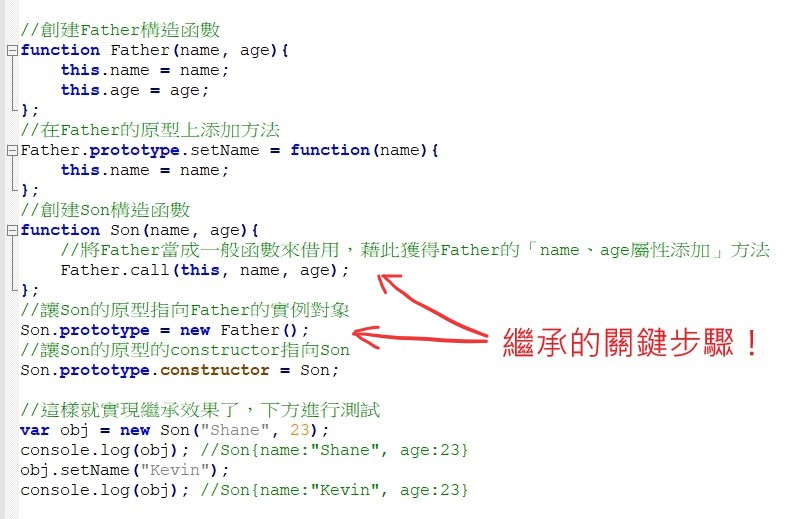
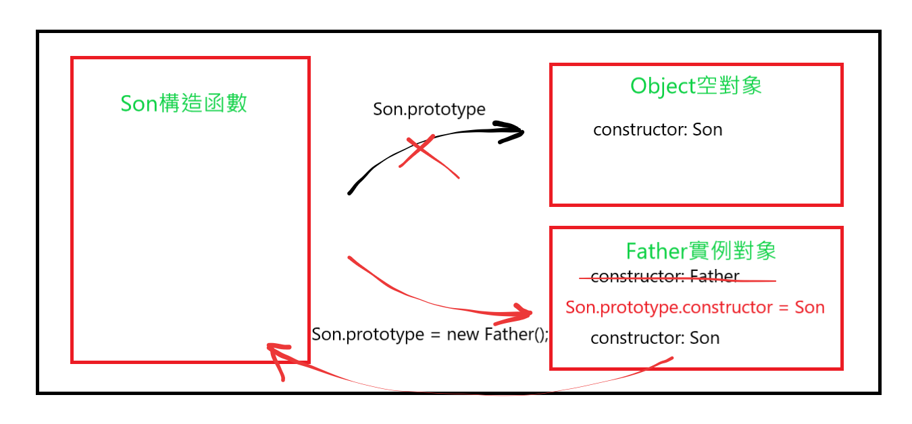
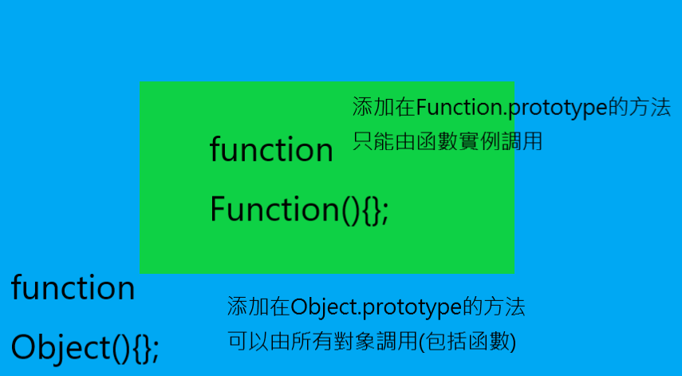
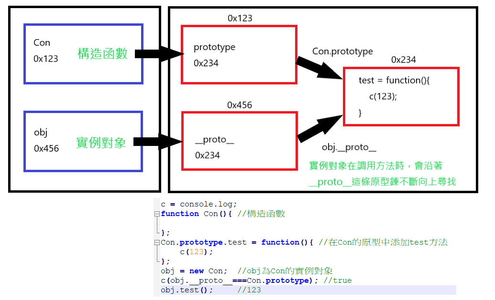

我的個人網頁
我在這裡紀錄我學習程式的歷程
並在這裡練習網頁前端製作的各項技術
更多內容請點擊左上角的菜單查閱
前端實作經典案例輪播圖
自製動畫效果
我接觸過的程式語言
-
Python

Python是一種廣泛使用的直譯式、進階編程、通用型程式語言，由吉多·范羅蘇姆創造，第一版釋出於1991年。Python的設計哲學強調程式碼的可讀性和簡潔的語法（尤其是使用空格縮排劃分程式碼塊，而非使用大括號或者關鍵詞）。相比於C++或Java，Python讓開發者能夠用更少的代碼表達想法。不管是小型還是大型程式，該語言都試圖讓程式的結構清晰明了。
-
HTML5

HTML5是HTML最新的修訂版本，由全球資訊網協會（W3C）於2014年10月完成標準制定。目標是取代1999年所制定的HTML 4.01和XHTML 1.0標準，以期能在網際網路應用迅速發展的時候，使網路標準達到符合當代的網路需求。它希望能夠減少網頁瀏覽器對於需要外掛程式的豐富性網路應用服務，例如：Adobe Flash、Microsoft Silverlight與Oracle JavaFX的需求，並且提供更多能有效加強網路應用的標準集。
-
CSS3

層疊樣式表（英語：Cascading Style Sheets，縮寫：CSS；又稱串樣式列表、級聯樣式表、串接樣式表、階層式樣式表）是一種用來為結構化文件（如HTML文件或XML應用）添加樣式（字型、間距和顏色等）的電腦語言，由W3C定義和維護。目前最新版本是CSS2.1，為W3C的推薦標準。CSS3現在已被大部分現代瀏覽器支援，而下一版的CSS4仍在開發中。
-
JavaScript

JavaScript（通常縮寫為JS）是一種進階的、直譯的程式語言。JavaScript是一門基於原型、函式先行的語言，是一門多範式的語言，它支援物件導向編程，指令式程式設計，以及函式語言程式設計。它提供語法來操控文字、陣列、日期以及正規表示式等，不支援I/O，比如網路、儲存和圖形等，但這些都可以由它的宿主環境提供支援。它被世界上的絕大多數網站所使用，也被世界主流瀏覽器（Chrome、IE、Firefox、Safari、Opera）支援。
-
C++

C++是一種使用廣泛的電腦程式設計語言。它是一種通用程式設計語言，支援多重程式設計模式，例如程序化程式設計、資料抽象化、物件導向程式設計、泛型程式設計和設計模式等。
職訓筆記
2019.07.23
本日課程：資料庫設計與開發實務/網站資訊系統程式設計
資料庫：
索引通常是
1)常常被當成查詢的欄位
2)重複率通常不高：否則難以對資料進行篩選
3)而且字數不長：以免在查詢時對系統造成太大負擔
實作1：用查詢精靈製作「部門代號」與「薪資」的關係表
實作2：用查詢設計製作「部門代號」與「薪資」的關係表
實作3：在查詢設計中使用「準則」來篩選資料
實作4：用IFF判斷式在姓名後加入先生或小姐 IFF(條件判斷式, 成立執行, 不成立執行)類似JS的"?"
實作5：進一步計算出稅額和淨所得
實作6：使用Like來進行模糊搜尋，搜尋條件中加入"?"表示任意一個字符，"*"表示任意數量的任意字符(0個也可以)
實作7：使用比較運算符來篩選，可以用<=及>=或使用between...and...
2019.07.18
本日課程：資料庫設計與開發實務/網站資訊系統程式設計
資料庫中比較重要的概念是正規化
正規化概念有待補充
網站設計部分今天有講到pre標籤
是個可以用來放程式碼的標籤，長知識了(之前根本沒在用)
其他就是塊級元素和行內元素的概念
不過老師始終沒有提到這兩個專有名詞
難道是大陸才有的說法??
2019.07.17
本日課程：計算機概論
前三節課幾乎都在教如何選購、組裝電腦硬體
我自己是覺得沒什麼重要的啦
等到真的有需要時再上網查資料就好
現在教我，等我要組電腦時大概也忘光了
節奏超級慢，真的是有夠無聊
最後一節課才在講2、8、10、16進位的換算
但是老師好像搞不太懂重點
花很多時間在簡單的例子上
真正重要的原理卻幾乎沒解釋
讓我感覺老師真的滿不會教的...
而這方面的知識我也早就已經會了
所以也沒什麼好紀錄的了
2019.07.16
本日課程：資料庫設計與開發實務/網站資訊系統程式設計
關聯式資料庫
資料庫設計出來時，常無法確認是否設計正確
困難點在於如何讓原始資料變成有意義的數據
資料庫會先進行塑模
也就是先確定模子是對的，再開始生產
塑模後產出一個圖
在將資料丟入資料庫前，必須先對資料進行正規化
塑模是完全沒有資料的情況下無中生有
正規化則是在有資料的情況下去設計合適的儲存方式
業界常用資料庫：
SQL Server, MySQL, Sybase, Informix, Oracle
通通都是關聯式資料庫
關聯式資料庫的三個特性：效能差、效能差、效能差!(相較於其他類型資料庫)
必須使用對應的程式語言來操作資料庫
主索引
在資料表中，通常會選定一個欄位作為主索引
通過這個欄位中的值可以判斷是哪一筆資料(等同於ID的概念)
而可以作為主索引的欄位具有以下兩種特性：
1. 所存資料均不重複
2. 所存資料不含空資料
像是學號就是很好的主索引(大家都有且都不重複)
生日就不能作為主索引(可能重複)
資料庫相關資源下載地址：ftp://10.10.3.102
下午開始教前端網頁設計
基本上我都已經學過了
讓我滿訝異的是老師竟然在第一節課就同時提到HTML、CSS和JS
還讓大家去抄他的JS程式碼
我個人認為讓大家做這種「不知道自己在幹嘛」的事情滿不妥的
容易讓初學者在一開始就一團混亂
希望他只是為了讓大家知道網頁是怎麼運作的才這樣舉例
還是得循序漸進的教才好懂阿!!
別再把主題一鍋粥的丟給大家了
如果他之後教form時就教後端，那我真的會吐血...
2019.07.15
本日課程：網路資訊系統程式設計
今天也是幾乎都在閒聊
老師大概提點一下課程結構
也說了不少台灣資訊相關產業的發展史
也是沒什麼特別重要的
明天開始教HTML的樣子
備註：我當班長啦!!
2019.07.12
本日課程：計算機概論
大概就是說了些電腦的發展歷史
沒什麼特別重要的
留言板
我的其他興趣
我平常的興趣是打羽球
如果想要和我切磋球技的話可以在上方留下聯絡資訊哦～
這裡和大家分享一部精采的羽球影片：
學習日誌
2019.07.24
今天主要在學習Git的使用
2019.07.24
最近都在學習自適應的原理...
想弄懂原理之後自己寫一個類似Bootstrap的框架來套用在這個網站上
今天赫然發現在w3school上有個「CSS響應式教學」專欄
裡面把原理講得很清楚，豁然開朗
我也將相關的代碼寫好了
不過一下子不曉得可以把這框架套在哪裡
所以我乾脆就在下面這裡測試吧XD
col-md-6
col-sm-5
col-xs-4
col-md-4
col-sm-4
col-xs-4
col-md-2
col-sm-3
col-xs-4
隨著螢幕寬度增大，左邊的盒子占比會變大，右邊的盒子占比會變小
看起來沒什麼問題，應該算是成功了
以後應該會將這個技術運用在網站新創建的部分
學習日誌
2019.07.22
前兩天都在改音樂播放器的樣式
弄進度條同步弄了半天
所以都沒學新東西
---
今天繼續學Bootstrap
我其實到現在都還沒下載來用哈哈
主要是覺得很難直接套用到這個網站上
它應該是快速開發一個新網頁比較適用
已經成形的網頁應該不好修改
所以我主要是想學它的實現原理
好讓我學到如何將其套用到這個網站上
而今天我在看教學影片時發現個神奇的東西
就是CSS3的選擇器
有個[property^="string"]
還有[property$="string"]、[property*="string"]
跟正則表達式類似
用來選取有該屬性
且開頭/結尾/任意位置 為string的DOM元素
所以可以配合@media
對所有class="col-*" 的DOM元素進行設置
來實現某些響應式的功能
真的頗神奇
應該讓我對Bootstrap的了解又更深了一點
2019.07.18
最近學習的重點為網頁自適應
才突然發現CSS中竟然有@media這麼神奇的東西
可以用它來調整網頁在不同的寬度下的CSS樣式
或是透過JS檢測window寬度來進行對應的調整
其實用Bootstrap來佈局應該是最快最沒問題的作法
但每次在學習新的框架時我總有種排斥感(老想著自幹)
所以目前本網站的自適應我都還是靠自幹哈哈
94不想用Bootstrap
不過這個框架到現在都還滿流行的樣子
所以還是要學啦
不過相較於知道怎麼用Bootstrap
知道它的實現原理我認為是更重要的
我也將以此為重點來學習
2019.07.12
今天有比較多概念：
進程與線程、瀏覽器內核、線程與定時器、事件循環模型、JS多線程方法
1. 進程與線程
一台電腦會同時進行多個進程，而每個進程會進行一個以上的線程
Ex: Chrome瀏覽器的每個分頁都是不同的進程
而若有兩個以上的線程，則稱為多線程
一般來說，JS文件的加載都是單線程的
因為如果使用多線程，可能導致多個線程在調用同一個DOM元素時會產生衝突
Ex: a線程要刪除某p標籤，b線程要修改該p標籤，結果a線程執行後b線程找不到該p標籤而報錯
如果要解決這個問題，則會大大提升編寫代碼時的難度，得不償失
所以基本上JS都是單線程執行(就是從上到下一行一行執行代碼)
但有其特別的執行順序
JS會先執行「初始化代碼」，再執行「回調代碼」(基本上就是回調函數)
也就是先執行完一般的代碼
再執行監聽像是setTimeout、onclick裡面的回調函數
這樣會引發一些問題，將在下方提及
2. 瀏覽器內核
就是瀏覽器內部的核心技術，如下表
Chrome、Safari: webkit
firefox: Gecko
IE: Trident
360、搜狗(都是大陸的非主流瀏覽器)：webkit 和 Trident 交替使用
就是一些大概知道就好的知識
3. 線程與定時器
setTimeout、setInterval這樣的定時器函數並不是完全準確的
而是有5毫秒以內的可忽略誤差
不過若是在一般代碼中有一些較耗時的代碼(遞迴、嵌套循環等)
則會造成定時器的大量誤差
這是因為JS會先執行「初始化代碼」，再執行「回調代碼」
所以發生以下狀況：
初始化時設定定時器 --> 初始化時執行耗時代碼(產生延遲時間t) --> 執行回調代碼(定時器真的開始計時)
因此產生時間誤差t
也就是說，耗時代碼阻塞了JS的主線程，造成了誤差
解決方案：讓耗時代碼在JS支線程中執行(後面提及)
4. 事件循環模型
不囉嗦，先上圖

總之就是像這樣
JS執行各行代碼 --> 其中有許多網頁API --> 將這些回調函數丟入對列中逐項執行
5. JS多線程(worker)
剛剛提到多線程會產生操作DOM時的衝突
所以只要使用多線程時禁止操作DOM就可以避免這個問題
可以讓支線程執行一些耗時的計算性代碼
就可以解決在計算過程中造成的瀏覽器卡頓以及計時器失準問題
在HTML5中新增了worker對象
利用它可以實現多線程處理
下例是有使用多線程的差異
輸入數值可以計算對應的費波納契第n位數字
由於費波納契是由遞迴計算，因此很耗時
若輸入的數字過大(>50)
會讓瀏覽器卡頓一段時間
多線程則不受影響
由於Chrome不開放本地文件使用多線程，目前無法使用(我TM白忙一場)
終於把JS高級學完了
相信以後在編寫代碼時可以更加整齊及效率
2019.07.11
類的繼承
在JS中，是通過構造函數以及new方法來創建一個類
但由於對象、類、函數這些東西糾結的交纏在一起
不像Python直接以def和class區分開
所以要達成某些效果也是特別複雜
像是繼承這個效果
在Python中只要在創建類時給予繼承參數就可以實現
在JS中則要有清楚的原型概念才寫得出代碼(雖然也不複雜)
相關代碼如下圖

最關鍵的步驟就是 Son.prototype = new Father();
此步驟的效果如下圖

藉由此步驟
obj在調用setName方法時
就可以沿著__proto__原型鍊找到setName方法，如下圖

除此之外
還要使用Father.call(this, name, age)將Fahter設定屬性的代碼拿來給Son使用
才可以實現完整的繼承效果
----------切換主題-----------
還有一個重要概念：JS的變量提升
所謂變量提升是指用var定義的變量會在最一開始先統一定義為undefined
等到該行代碼執行時才賦值
所以如果在聲明變量的代碼前面調用該變量
不會報錯，而是返回undefined
而function定義的函數也有這種提升效果
而且會直接賦值
也就是說只要你在整個JS文件中有定義該函數
則在任何位置都能調用(不過當然要在作用域內)
而var的提升是先於function的提升的
這點要特別注意
2019.07.10
今天主要在學習「閉包」的概念
據說它和「原型」被稱為JS兩大神獸
果然確實挺有難度
這裡我將我將重點進行歸納總結：
---
1. 閉包的定義：
在一個函數中還有一個子函數
其中這個子函數有引用父函數內聲明的變量
則這個子函數就是一個閉包，如下圖

---
2. 閉包的功能：
1)延長局部變量的生命週期
2)讓使用者可以在外部操作局部變量，並且限制其操作方式
像是上圖的例子
本來局部變量a應該在father執行完後就銷毀
卻因為仍有son對其引用而延續了它的壽命
並且只能透過調用f的方式來操作它
可以用這種方式來封裝方法、創建JS模塊
---
3. 如何用閉包來創建JS模塊？
如下例

如此一來外部無法直接訪問局部變量a
只能透過我們自定義的函數來進行操作
---
4. 閉包的缺點
閉包延長了局部變量的生命週期
讓程序員可以對其進行操作
但同時也讓該局部變量繼續占用內存
若內存被耗盡則系統崩潰顯示錯誤
因此在不需要使用閉包後
應將引用該閉包的相關變量賦值為null
才能釋放內存空間
----------切換主題-----------
對象創建模式：
創建對象有很多方法
基本上都已經學過了
主要的重點在於
創建一個類時，要將類的方法添加到類的原型之中
不要讓每個類的實例都有一個獨立的方法函數
以免浪費內存空間
2019.07.09
今天還是著重於學習於原型鍊的部分
有幾個聽起來很繞的概念：
函數都是一種對象，特殊的對象，也就是說函數同時有「函數」及「對象」兩種特性
所有函數都是Function函數對象的實例，包括Functionc函數對象本身
所有對象的構造函數Object也是一個函數，所以它也是Function的一個實例
涵蓋範圍如下圖：

有點複雜，不過慢慢琢磨就能理明白
後來又多學兩個比較簡單的概念：執行上下文及函數作用域
函數作用域是在代碼寫好時就確定的
簡單來說就是函數自己創建的一個獨立區塊
裡面的變量都是局部變量
不能被外部所調用
執行上下文則是調用一次函數就會創建一個
2019.07.08
今天新學習到的知識點：
1. 傳遞變量的值時(例如傳遞到函數中)，傳遞的不是變量本身，而是變量中的值(可能是基本數據類型，也可能是對象的地址)
2. 函數中需要傳入的參數叫形參，真的傳遞進去的值叫實參
3. 將參數傳入函數中，是將變量的值傳入形參中，所以函數中對形參的操作不會影響實參的值，除非傳入的是對象的地址，再藉由形參對該地址的對象內容進行修改，才會產生實質影響
4. 回調函數定義：
1) 你自定義的
2) 你沒有調用
3) 它最終被調用了
所以原來之前在DOM對象上綁定的事件都是回調函數，一直看到這個詞，但現在才真正知道它的意思
除此之外還發現
在JS中，如果不使用工廠函數來創建對象，而是直接使用{}的話
語法其實有點像Python的字典
都是{key: value, key: value}的形式
在調用上也差不多，可以使用obj[key]
差異就在於JS可以用obj.key調用(如果key不包含特殊符號、數字開頭等特殊命名)
5. 每個函數都有一個prototype屬性，這個prototype屬性中有個默認空對象(即顯式原型屬性)，此對象又包含一個constructor屬性，此屬性又指向該函數
6. 每個實例對象都有一個__proto__屬性，這個__proto__屬性指向建構該實例的構造函數的prototype(即隱式原型屬性)
5&6語言描述很抽象，下面圖片解釋較清楚：

2019.07.07
今天開始看JS高級
覺得收穫滿多的
畢竟之前學的時候很多基本概念沒有搞得很懂
今天主要學到一個之前在學Python數據結構時就學過但有點忘記的概念
就是數據的儲存方式
一般的數據類型都是直接儲存在內存的變量標籤中
但若是對象(包括函數和數組)
則是將對象的地址保存到變量標籤中
這也是為何如果將一個對象保存到兩個標籤中時
若通過其中一個標籤將該對象的數據做修改
則另外一個標籤對應的數據也會修改(因為都是指向同一個對象)
而一般數據類型則不會有此特性
真是豁然開朗
--------------------
最近還有一個頓悟
本來不是很理解究竟要在何時使用對象這個東西
畢竟不使用對象也可以完成我需要的程序阿
後來不知在哪聽到
「對象就是用來儲存數據(及方法)的」
乍聽像是廢話
但卻讓我茅塞頓開
突然理解為何那麼多框架(jQuery、Vue、React等)
都要將程序封裝到對象之中再調用
因為對象本來就是用來包裝這些數據和函數的阿!!
包裝起來調用方便
也可以避免創建出全局變量和用戶的自定義變量衝突
真是太天才了!
今後我也要多練習將程序包裝到對象之中
這大概是朝向資深工程師的重要一步www
真是獲益良多
2019.07.06
這是第一篇學習日誌，在此之前我沒有特別紀錄這段學習的日子
從接觸Python對編程感到興趣
到後來開始接觸網頁前端的相關製作
本來覺得有HTML、CSS、Javascript這麼多東西要學
一轉眼到現在過了兩個月左右，竟也學得差不多了
要做出一個網站應該有的基本結構及效果也沒有太大問題了
所以最近開始接觸後端的部分
主要也是學完了jQuery
得開始學Ajax，就勢必得會基本的PHP、架設伺服器等
不過為了架設伺服器最近很頭痛
因為有的教學是使用集成資源
也就是包含PHP、mySQL、Apache等等後端必備的軟體
有的教學則是單獨下載各項軟體再設置
結果集成資源的雖然很快就能架設好伺服器
但我卻不知該如何將PHP文件放置到正確的位置來開啟
單獨下載各項軟體感覺又很麻煩
真的是讓我很頭痛
反正7/12就要去高雄上課了
我想到時候老師都會教我們該如何架設吧
現在我就先不想管這些了
想要先把Javascript的相關語法弄熟悉
畢竟雖然現在已經大部分的功能都能夠實現了
但很多將方法封裝成函數、對象的技術我卻不大理解
主要原因可能還是因為我對一些數組、對象的操作方法不夠熟悉導致
所以這段時間就先來補強這部分吧
聽過有句話說得好
「不要想要先學哪種流行的語言，
因為以後都得學
應該先專精一門語言
對以後的發展或學習其他語言的理解都是比較好的」
網站更新紀錄
2019.07.23
留言板功能優化：留言輸入區高度將隨需要而變化
留言板自適應
搜尋功能自適應(目前僅是先做消失處理)
2019.07.21
將音樂播放器樣式優化及完善其功能
2019.07.19
優化搜尋引擎：搜尋時只要包含對應字母就會顯示對應結果(不一定要在開頭輸入)、可以輸入簡短文字來快速定位文章(像是搜尋W3會找到所有工作日誌中日期包含3的文章)
新增網站小圖標
修改logo和清晰模式的提示框效果(離開懸浮就消失)
修改音樂播放器樣式
2019.07.18
頁尾自適應：改用flex布局
左側導航欄自適應：在高度不足時會顯示滾動條
2019.07.17
頂部logo自適應：在寬度低於1000px的裝置上subtitle會消失
2019.07.16
新增回到頂部按鈕
2019.07.15
將搜尋欄進一步完善，搜尋結果會顯示文章類型、搜尋時不分大小寫
搜尋欄Bug修正：在點擊最下面的搜尋結果時會觸發不了點擊事件，原因是當focusout被觸發時收起提示框導致沒有真的點擊到搜尋結果
2019.07.14
將搜尋欄進一步完善，可以預覽相關結果、點擊跳轉
2019.07.13
將「我使用過的網站及論壇」刪除，移至頁尾「教學網站」 新增「職訓筆記」板塊
2019.07.12
新增MyWebsite書寫動畫效果
2019.07.11
完善「學習日誌」內的圖片放大功能，使圖片放大後不會超出外框
在封面添加自製動畫「Sun and Earth」(使用精靈圖技術)
2019.07.10
完善搜尋欄功能
添加搜尋欄說明
「學習日誌」中的圖片放大顯示功能
2019.07.07
新增Bug回報
2019.07.06
新增網站更新紀錄、清晰模式提示訊息、logo提示訊息
增加留言板的部分顯示功能：如果留言超過五行會隱藏並出現「顯示全部內容」按鈕
將「學習資源」移至頁尾
在頁尾添加「聯絡我們」
2019.07.05
增加了閱讀進度條
2019.07.04以前：網站各項功能
左側導航欄懸浮水彩效果
音樂控制台、播放列表
左側導航欄
橫向導航欄(往下滾動將自動貼齊頂部)
留言板各項功能：留言、喜歡不喜歡、回覆留言
登入、註冊
搜尋欄
「我接觸過的程式語言」放大檢視功能
背景圖片繪製
有夠麻煩der留言板
幫我看看有沒有bugㄅ
顯示全部內容
查看回覆
覺得這個留言板很眼熟?
因為這是仿製youtube的哈哈
大致重現，有些細節我不會做QQ
顯示更多內容
不過因為我還沒學資料庫
所以留言只要重新整理就不見了
等我會架設伺服器再說ㄅ
顯示更多內容